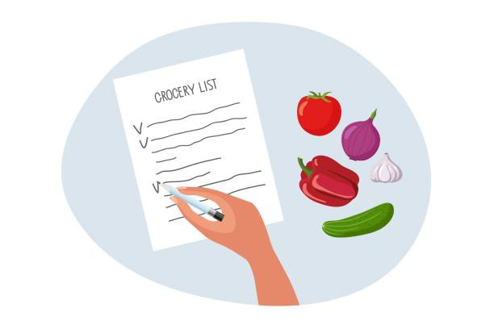

Control Flow - Loops#
whileforrangecontinuebreak
SideNote: counters#
# Initialize a counter variable
counter = 0
print(counter)
counter = counter + 1
print(counter)
counter = counter + 1
print(counter)
The idea here…is that as the code executes, the value of the counter increases. We’ll use these a lot in loops!
Loops#
Avoid copy + pasting#
For repetitive actions, if you find yourself copying + pasting, rethink your strategy.
Loops are one way to avoid this.
# this is an example of repetitive code without loops
lst = ['you@yahoo.com', 'them@bing.com', 'otherpeople@gmail.com']
email = lst[0]
print('the user\'s email address is: ' + email)
email = lst[1]
print('the user\'s email address is: ' + email)
email = lst[2]
print('the user\'s email address is: ' + email)
# the same thing is much easier, cleaner, more efficient, and easier to maintain with a loop:
for email in lst:
print('the user\'s email address is: ' + email)
while Loops#
while loops always have the structure:
while condition:
# Loop contents
While condition is true, execute the code contents.
Repeat until condition is no longer True.
while Loop Example I#
number = -5
while number < 0:
print(number)
number = number + 1 # must have code to make condition evaluate as False at some point
while Loop Example II#
shopping_budget = 20
bill = 0
index = 0
prices = [3, 4, 10, 3, 2, 15, 7]
while bill < shopping_budget:
# add cost of item (prices) to bill
bill = bill + prices[index]
# increment index each time through the loop
index = index + 1
#print bill so we can see what's going on
print(bill)
Class Question #1#
How many temperature values will be output from this while loop before “The tea is cool enough.” is printed?
temperature = 115
while temperature > 112:
print(temperature)
temperature = temperature - 1
print('The tea is cool enough.')
A) 1
B) 2
C) 3
D) 4
E) Infinite
Class Question #2#
What will be the value of counter after this loop is run:
keep_looping = True
counter = 0
while keep_looping:
if counter > 3:
keep_looping = False
counter = counter + 1
print(counter)
A) 0
B) 3
C) 4
D) 5
E) Infinite
for Loops#

For Loop Example I#
Looping through a list of items
# Define a list of items
list_of_items = ['A', True, 12]
# Loop across each element
for item in list_of_items:
print(item)
# difference between printing within and outside loop
print(item)
For Loop Example II#
Looping through a string
# Loop across items in a string
vowels = ['A', 'E', 'I', 'O', 'U', 'a', 'e', 'i', 'o', 'u']
my_string = 'python'
for char in my_string:
if char not in vowels:
print(char)
Class Question #3#
How many values will be printed from this for loop before it first prints “The tea is too hot!”?
temperatures = [114, 115, 116, 117, 118]
for temp in temperatures:
print(temp)
if(temp > 115):
print('The tea is too hot!')
A) 1
B) 2
C) 3
D) 4
E) Infinite
Important note about for loops:#
Be very careful not to change the length of the collection you are looping through inside the loop. This can lead to errors or infinite loops
my_list = [1, 2, 3, 4, 5, 6]
for num in my_list:
print(num)
if num % 2 == 0:
my_list.append(num) # adding an item to the list inside the for loop makes the for loop keep going
# this code is here to stop it from actually being an infinite loop
if len(my_list) > 1000000:
break
range#
range is an operator to create a range of numbers, that is often used with loops.
range Examples#
for ind in [0, 1, 2, 3, 4]:
print(ind)
# the asterisk here unpacks the range
# don't worry about this syntax now
print(*range(0, 5))
# Loop across a sequence of numbers, using range
for ind in range(0, 5):
print(ind)
# Range, like indexing, is defined by 'start', 'stop', 'step'
for ind in range(2, 16, 2):
print(ind)
# using range in example above
for temp in range(114, 119):
print(temp)
if(temp > 115):
print('The tea is too hot!')
Class Question #4#
How many values would this loop print and what would be the last value printed?
for ind in range(1, 10, 3):
print(ind)
A) values printed: 3; last value: 7
B) values printed: 3; last value: 9
C) values printed: 4; last value: 9
D) values printed: 7; last value: 7
E) values printed: 7; last value: 9
continue#
continue is a special operator to jump ahead to the next iteration of a loop.
continue examples#
lst = [0, 1, 2, 3]
for item in lst:
print(item)
if item == 2:
continue
print('Luckily that wasn\'t a 2')
courses = ['cogs9', 'cogs18', 'cogs108']
for course in courses:
if course == 'cogs18':
print(course)
continue
print(course + '!')
string = "python"
for char in string:
if char == "p" or char == "y":
continue
print(char)
Counters within loops
A counter within a loop…
calories = [200, 300, 500]
foods = ['cake', 'pie', 'donuts']
counter = 0 # initialize a counter
for val in calories:
# print val
print(val)
print(foods[counter])
# increment by 1
counter = counter + 1
# print after loop terminates
print("Final counter value:", counter)
Class Question #5#
What will be the value of counter after this code has run:
counter = 0
my_lst = [False, True, False, True]
for item in my_lst:
if item:
continue
else:
counter = counter + 1
print(counter)
A) 0
B) 1
C) 2
D) 3
E) 4
break#
break is a special operator to break out of a loop completely.
break examples#
lst = [0, 1, 2, 3]
for item in lst:
if item == 2:
break
print(item)
courses = ["cogs9", "cogs18", "cogs108"]
for course in courses:
if course == "cogs18":
break
print(course)
string = "love python"
for char in string:
if char == "p" or char == "y":
break
print(char)
# using range in example above
for temp in range(114, 119):
print(temp)
if(temp > 115):
print('The tea is too hot!')
break
Class Question #6#
What will the following code print out:
number = 1
while True:
if number % 3 == 0:
break
print(number)
number = number + 1
A) 1
B) 1 2
C) 1 2 3
D) Something else
E) This code prints forever
Class Question #7#
For how many temp will output be printed from this for loop?
(In other words, how many times in this for loop will something be printed out?)
# using range in example above
for temp in range(114, 119):
if(temp < 116):
continue
elif(temp == 116):
print('The tea is too hot!')
else:
break
A) 0
B) 1
C) 3
D) 5
E) 6
Class Question #8#
What will be the value of counter after this code has run:
counter = 0
my_lst = [False, True, False, True]
for item in my_lst:
if item:
continue
else:
counter = counter + 1
print(counter)
A) 0
B) 1
C) 2
D) 3
E) 4
Dictionaries: Indexing & Looping#
dictionary = {'key_1' : 'val_1', 'key_2' : 'val_2'}
# Dictionaries are indexed using their keys
dictionary['key_1']
# Loop over a dictionary loops across the keys
# Inside the loop, you can use the key to access the associated value
for item in dictionary:
print('Loop Iteration')
print('\tKey:\t', item)
print('\tValue:\t', dictionary[item])
# another approach that you will find if you Google
for key, val in dictionary.items():
print('Loop Iteration')
print('\tKey:\t', key)
print('\tValue:\t', val)
Code Style: Loops#
for/whilestatement with a colon at the end on first lineall code within the loop inside a code block (indented)
Good Code Style
number = 5
while number < 0:
print(number)
number = number + 1
Code Style to Avoid
number=-5
while number<0:print(number); number=number+1 # avoid all on a single line
Loops Practice#
Loops Practice #1#
Write a function count_odd() contatining a loop that will add all the odd numbers for the input range together.
def count_odd(range_lower, range_upper):
count_odd(0,6)
A) I did it!
B) I think I did it.
C) I started but am now stuck.
D) I have no idea where to start.
Loops Practice #2#
Write a function count_vowels() containing a loop that will loop through all the letters in my_name (the input parameter) and count all the vowels in your name.
def count_vowels(my_name):
count_vowels('george')
A) I did it!
B) I think I did it.
C) I started but am now stuck.
D) I have no idea where to start.
Loops Practice #3#
Write a function create_dictionary that takes two input lists lst_1 and lst_2. Inside the function, join the two lists to form a dictionary joined_dictionary where the first element in lst_1 is the first key in joined_dictionary and the the first element in lst_2 is the first value in joined_dictionary and so on and so forth. Then return joined_dictionary as the output.
A) I did it! B) I think I did it. C) I tried but I am stuck. D) Super duper lost
# YOUR CODE HERE
def create_dictionary(lst_1, lst_2):
# TEST YOUR FUNCTION HERE
# Note that the two input lists must be the
# same length for the function to work properly
random_lst_1 = ['a', 'b', 'c', 'd']
random_lst_2 = [1, 2, 3, 4]
create_dictionary(random_lst_1, random_lst_2)